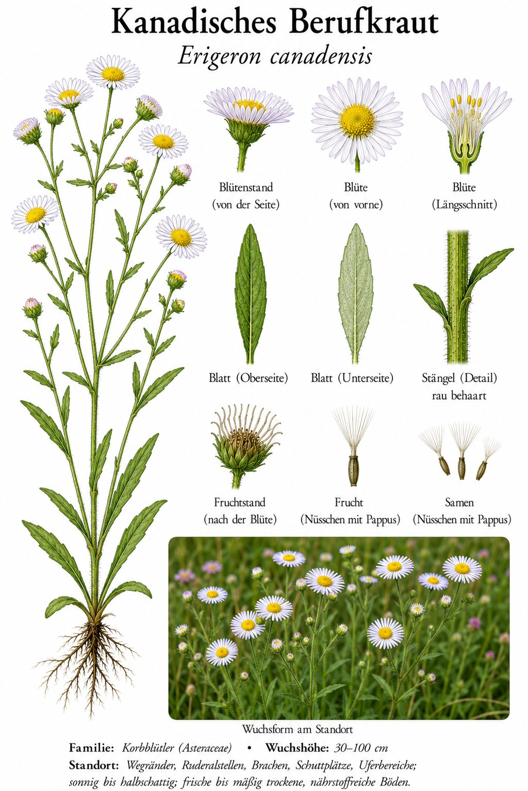

Der unscheinbare Einwanderer, der jede Pflasterritze erobert.

Klein, unscheinbar — und überall
Die einzelnen Blütenköpfchen sind kaum größer als ein Stecknadelkopf, dafür sitzen sie zu Hunderten an einer Pflanze. Auf Bahngleisen, Schuttplätzen und in Pflasterfugen gehört das Berufkraut zu den ersten Besiedlern. Eine einzige Pflanze kann über 100.000 Samen bilden.
Ein Amerikaner macht Karriere
Ursprünglich stammt die Art aus Nordamerika und erreichte Europa im 17. Jahrhundert. Von wenigen Gärten aus eroberte sie den ganzen Kontinent. Sie war zudem eine der ersten Pflanzen weltweit, die gegen das Unkrautmittel Glyphosat unempfindlich wurden — ein moderner Überlebenskünstler.
Wissenswertes & Merksätze
Erkennungszeichen
Steif aufrechte, bis über 1 m hohe Pflanze mit vielen winzigen, grünlich-weißen Körbchen in einer schmalen Rispe. Blätter schmal und am Rand bewimpert.
Gegen den „bösen Blick“
Der seltsame Name „Berufkraut“ kommt von „berufen“ — also verhext oder mit bösem Blick belegt. Man glaubte einst, das Kraut schütze Mensch und Vieh vor solchem Unheil. Geholfen hat dabei wohl vor allem, dass es buchstäblich überall griffbereit wuchs.